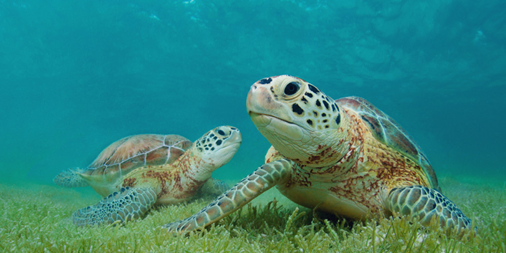

Bienvenido
Descubre el fascinante mundo de las tortugas, criaturas asombrosas que han existido durante más de 200 millones de años. Desde los vastos océanos hasta los tranquilos ríos y bosques, las tortugas han encontrado su hogar en diversos ecosistemas alrededor del mundo. En este sitio, exploraremos las diversas especies de tortugas marinas, terrestres y de agua dulce, aprenderemos sobre los esfuerzos de conservación para protegerlas, y compartiremos curiosidades y datos interesantes.
¿Qué puedes esperar encontrar aquí?
Tipos de Tortugas
Conocerás las diferencias y similitudes entre las tortugas marinas, que navegan las corrientes oceánicas, las tortugas terrestres, que viven en variados paisajes desde desiertos hasta selvas, y las tortugas de agua dulce, que habitan en ríos, lagos y estanques. Cada especie tiene adaptaciones únicas y fascinantes historias de supervivencia.
Conservación y Amenazas
Las tortugas enfrentan amenazas como la pérdida de hábitat, la contaminación, el cambio climático y la caza furtiva. Destacaremos los esfuerzos de organizaciones y voluntarios para protegerlas y sus hábitats, y te enseñaremos cómo puedes contribuir a su conservación con cambios simples en tu vida diaria o participando en proyectos de conservación.
Curiosidades y Datos Interesantes
En esta sección, encontrarás datos curiosos, mitos y leyendas sobre las tortugas, así como información científica sobre su biología y comportamiento. Descubre cuántas especies de tortugas existen, cuáles son las más longevas y otros hechos sorprendentes que te harán apreciar aún más a estos reptiles.